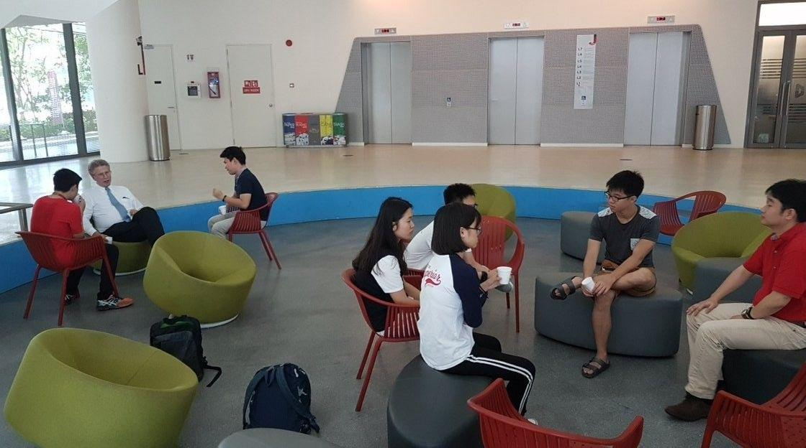
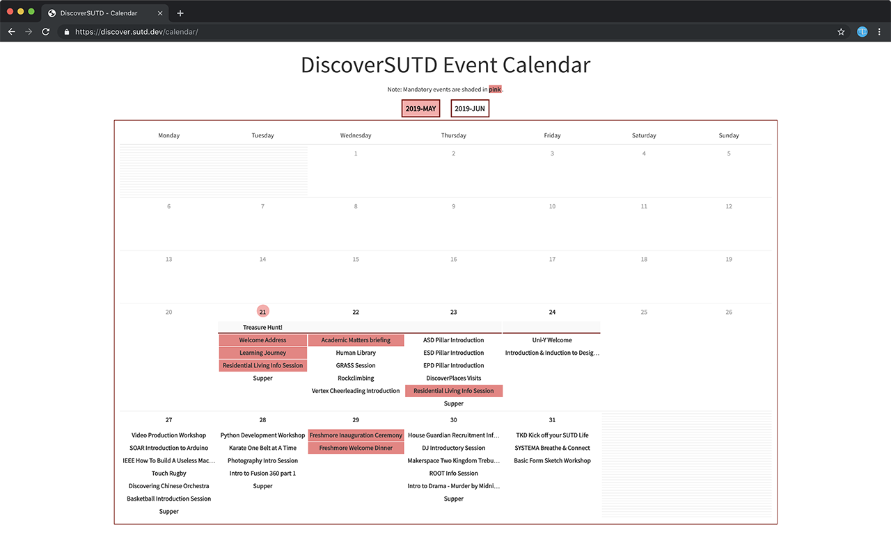
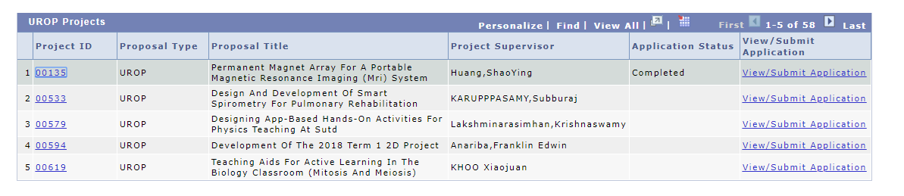

DiscoverSUTD is a 3 week long introduction to the SUTD community. It will last from 21 May to 7 June 2019. This event collaboratively brought to you by the various Fifth Rows, faculty, pillars, housing, and research labs.
The main event page serves as the starting point for your SUTD journey. Within this page, there is a community calendar, session sign ups and speaker biographies for our flagship event, the SUTD Human Library.
Now before you continue, you are highly recommended to bookmark this page! This guide will be updated continuously as we receive feedback throughout the event. Through this guide, you will be able to learn more about what SUTD can offer.
What you'll learn
- Key Highlights of DiscoverSUTD
- DiscoverSUTD Event Calendar
- Tips on enjoying your first month at SUTD
- How to provide feedback
These are the key areas of DiscoverSUTD.
- DiscoverPeople: Human Library
- DiscoverPlaces
- DiscoverPillars
- Discover5thRows
Over the next few pages, we'll take you through what we've planned in each area, and why you should attend these activities! You'll find a detailed breakdown on the sign-up process in Section 7 of this guide: Calendar.
Last but not least, we have a Telegram group. You're encouraged to join it and use it to ask questions or report problems/feedback to your seniors.
A Human Library allows YOU to borrow "books". These books are real people: faculty, staff, researchers and seniors. When you borrow a book, you sit down with them and have a conversation about their experiences both inside and outside of SUTD.

Every single book will have a bio that gives you an idea of what conversation topics you might expect! You can read all bios right here and find out where your favourite book is seated at the event venue (TBC).
Among the 20+ books include:
- Senior Management, including Associate Provosts
- Faculty from all pillars
- Researchers and graduate students
- Seniors (Undergraduate)
During the Human Library, you can expect to gain unique insights into the various aspects of being a part of the SUTD community, as well as the work experiences and lessons learnt by faculty/researchers throughout their careers, giving you a better understanding of the wider world.
SUTD has many research labs located all around the campus. These labs are usually not accessible due to research work but for one day only, we will be conducting lab tours!
Here's a broad overview of the labs that will be opening their doors during the DiscoverPlaces event. Each lab covers a specific niche, so do take note which which lab piques your interest!
iTrust
Research on the development of advanced tools and methodologies to ensure the security and safety of current and future systems in five thrusts:
- Cyber Physical Systems (CPS)
- Internet of Things (IoT) systems
- Enterprise Networks
- Autonomous Vehicles
- Blockchain
You can learn more about iTrust on their website.
SUTD-MIT International Design Centre (IDC)
The SUTD-MIT International Design Centre engages in a broad range of collaboration and outreach programs with industry, academia and other design research centers and has incubated a growing list of startups.
You can learn more about IDC on their website.
DmanD
advances digital manufacturing in a strategic and holistic manner, bringing together modern and emerging technologies (and attendant basic science and engineering) along the digital pathway that will accelerate Ideas-to-Things. We will carry out research that will exploit new design windows enabled by digital manufacturing technologies to create unique, optima, and previously unobtainable products.
You can learn more about DmanD on their website.
Entrepreneurship Centre
We provide support and avenues for entrepreneurship related activities that turn ideas into reality. Our activities range from entrepreneurship education, experiential programs, overseas entrepreneurship exposures, Entrepreneurship capstone, incubation, mentoring, and events around entrepreneurship.
You can learn more about EC on their website.
FabLab
The Fabrication Lab (Fab Lab) and its Satellite Fab Labs aim to allow students to design and build virtually "almost anything" with high-performance machines such as Laser Cutting and Engraving systems, 3D Printers, Plastic Injection Molding machines, vertical sanders, Water-jet Machining Centers, Vertical Injection Molding machines, etc.
Our pillar years are where you find your passion, don't miss out this chance to hear from the people who designed the curriculum that you will be taking.
Architecture and Sustainable Design (ASD)
What is Core Studio? What is Option Studio?
And finally, what is the link between VR and AR technology and the studios?
Join us in this session where Prof Eva Castro will provide an introduction to the Architecture and Sustainable (ASD) Pillar and the use of technology in design. There will be some hands VR/AR experience after Prof Eva's talk, followed by student sharing of the ASD experience.
Venue: Library 4th Floor (Building 1)
Date and time: 23rd May, 2:00pm to 4:00pm
You can learn more about ASD on their website.
Engineering Product Development (EPD)
Prof Ricky Ang will provide an introduction followed by a student panel dialogue. There will be past projects on display and EPD seniors you can interact with!
Venue: VIP Waiting Room (Building 2 Level 1, beside GomGom)
Date and time: 23 May, 2:00pm to 4:00pm
You can learn more about EPD on their website.
Engineering Systems and Design (ESD)
Prof Peter Jackson (pillar head) will personally conduct a session at the Data Analytics Lab:
- 1.610 on a transportation game
- Hands-on data analytics course using QGIS (geographic information system)
Venue: Data Analytics Lab (1.610)
Date and time: 23rd May, 3:00pm to 6:00pm
You can learn more about ESD on their website.
Information Systems Technology and Design (ISTD)
Organised in collaboration with 3DC, come by for a Python development workshop conducted by your seniors.
Venue: Think Tank 13/14 (1.508/1.509)
Date and time: 28rd May, 7:30pm to 9:30pm
You can learn more about ISTD on their website.
There are 20+ sessions designed just for you! These include:
- Sports Cluster: SYSTEMA (Russian martial arts), Climbers, Taekwondo etc.
- Arts/Culture Cluster: Ballroom Dancing, Drama, Sketch etc.
- Maker/Specialist Cluster: SOAR (Robotics), IEEE Student Society, PhotogCircle etc.
That's a lot of sessions so you an use event calendar to help sort them out for you! You will be able to sign up from there as well.
Supper sessions
At SUTD, we love free food, or as we call it, DSBJ (Don't Say Bo Jio)
To celebrate the start of your SUTD adventure, we're going to be organising supper thrice a week! On each of the days below, proceed to the Multi-purpose Hall (MPH) between 8 and 11 pm to enjoy snacks and make new friends!
- Mondays: 27 May, 3 June
- Tuesdays: 21 May, 28 May, 4 June
- Thursdays: 23 May, 30 May, 6 June
On each day, there will be one vegetarian and one non-vegetarian food item.
There are a great many things going on during the DiscoverSUTD period. Hence, we've prepared an event calendar to help you get a bird's eye view of what exciting activities are happening on each day!
The calendar can be accessed at https://discover.sutd.dev/calendar/. When you go to the URL, you should see the calendar. A screenshot is shown below:

By clicking on the event name, you will be brought to the event abstract where you can find out more details about the event and sign up for the event itself:
- Click on the event you're interested in
- From there, you will be able to see all the information about the event
- If you wish to attend, click the sign-up link (not all events require sign-up)
- To fill in the Form, you will need to sign-in with your SUTD Microsoft account
- After submitting the form, you will be considered registered for the event
Sign up early because some sessions have limited vacancies!
Food is one of the things that matter to us the most! Within the school, there are a few eateries that students go to if they fancy something outside the canteen.
- GomGom (Sub/Sandwich cafe)
Opening Hours: 9am to 8pm (weekdays) 12pm to 6pm (Sunday) - Crooked Cooks (Western and Japanese restaurant with a bar)
Opening Hours: 9am to 11pm (weekdays) 10am to 10pm (Saturday) - D'Cafe (Asian-Western fusion)
Opening Hours: 9am to 8pm (weekdays)
A couple of restaurants at Changi City Point (CCP) offers food at prices that are friendlier for students. CCP is within walking distance, one MRT stop away (Expo MRT). There is also a shuttle bus that runs at 30 minute intervals (starting at 11:15am and ending at 7:45pm).
- Soup Spoon Union
Offers student meals at $6.90
Student meal hours: Mondays to Fridays, until 6:30pm - Wolf Burgers
Burgers and a meal at 10% student discount
Fancy heading out a bit further? Want to treat yourself to a job well done? A mere two MRT stops away (and with no transfers required) is Tampines, with the following excellent (if a bit hard on your wallet) food places: (Note: the list is not exhaustive)
- iSteaks
Estimated Price: about 15~20 dollars per person, including drinks - 老火汤
Estimated Price: about 20~25 dollars per person, for a full meal - Fat Papa's
Estimated Price: about ~20 dollars per person, for a meal
Jewel@Changi Airport (closest thing to paradise itself)
Blogs such as TheSmartLocal, TimeOut, and DanielFoodDiary have written so much about Jewel. Guess what? We're literally two MRT stops away! If we were to list the number of restaurants it would take up the rest of the page... so we'll leave you to explore it yourself!
There are three housing blocks for students: Block 59 (nearest to campus), Block 57 (middle) and Block 55 (furthest from campus). Block 59 and Block 55 have nice rooftop areas on L12 with great views and some benches.
Facilities
- Tip for rooms: the lowered blinds near the room door tends to rattle continuously. Tape them down for a good night's sleep!
- There are many housing facilities that you can book!
Just go to the housing portal to find out more. - Aircon: website to top-up credits
After some time in school, you would realise that rooms in our school are often referred to using code numbers (e.g. 2.506). Here's a quick breakdown of what this code means to ease getting yourself around:
- (#.___) The number at the left of the decimal represents the building where the room may be found.
- Building 1 is where the library may be found
- Building 2 is where the campus center may be found
- Building 3 is opposite the campus center, where GongCha may be found
- Building 5 is where the FabLab may be found
- (_.###) For the number at the right of the decimal, the first digit represents the floor where the building may be found, and the other two numbers represent the room number.
- TL;DR: The format of the room code is [Building].[Floor][Room] so for example 2.504 references a room in Building 2, Level 5, Room 4.
Also, if you need to go across buildings, the following levels are interconnected in this fashion:
- Level 2: The second floor of the Campus Centre links Buildings 2 and 3.
- Level 3: The roof area above the Campus Centre links Buildings 1,2, and 3. An additional link bridge links Buildings 1 and 2 in the middle of Building 1. A final link bridge hidden along Building 1 links Buildings 1 and 5.
- Level 5: The link bridge roof is walkable and links Buildings 1 and 2.
Spaces to work after class are not limited to your cohort classrooms. Here is a quick list of alternatives that are used by your seniors:
- Hostel meeting room/study room
- Hostel rooftop
- Library (there are discussion rooms on Level 2)
- Pi Lab (located beside the printing room at Building 1 Level 5)
- Student Activity Center (located at Building 5 Level 4)
- ROOT Cove (2.311A - located at Building 2 Level 3/4)
Time is short in SUTD, and 3.5 years can pass by you in a flash. Here are some suggestions to help you get the most out of your time here in SUTD.
- Know what you want to get out of SUTD. Be it a career path, a good social circle, or technical skills. This will help inform the choices you make, and help you prioritise what matters to you.
- Appreciate the value of time. Your time is finite, and every choice has an opportunity cost to yourself and others. Make your choice clear to both.
- Be reasonable to the people giving you the opportunity and be clear about your level of commitment. There are too many opportunities in SUTD, and most of them might be tempting. It is alright to explore, but be responsible!
- When it comes to commitments, aim for quality over quantity. You will be unable to gain much if you take on too many things. It is recommended to be part of a maximum of up to 2 fifth rows and 1 active UROP only.
- Finish what you start! Being responsible not only helps you build up a portfolio of complete projects, it also helps establish you as a reliable team member and helps with finding and building teams.
- Be mindful of how you conduct yourself. SUTD is small, and news spreads quickly. It is very easy to be famous or infamous for the way you carry yourself, and how you treat your commitments.
The SUTD curriculum provides you with robust theoretical foundations and bare minimum practical foundations, which might not be sufficient for thriving in the working world. And in fact, many of the more "applied" courses occur late in your undergrad career (Term 6 onwards). This is after your internship opportunities and about the time when you begin your job hunt.
In our experience, projects and technical skills can weigh far more heavily than grades can. It is important to avoid focusing solely on grades, as it is very important to bolster your knowledge with practical and technical skills for the career path you at looking for.
As such you should be prepared to develop your skills during your own time:
- Utilise extra-curricular opportunities, such as technical Fifth Rows
- Self-learn from freely available resources on the Internet
We recommend to spend Term 1 joining a UROP, or specialist clubs and societies to try to bolster your skills! Take advantage of the lower academic pressure to invest in your technical abilities. Remember, no matter how well or badly you do, every grade is still recorded as 'PASS' in Term 1.
Then, with a foundation, to start diving into a deeper project or discipline in Term 2 immediately. Pillar years can get quite hectic, and many students find they no longer have the time to spend self-learning technical skills then. Your Freshmore year is really the best time to get a firm technical foundation!
That said, don't go around failing subjects! Grades are still relevant. They help you to open up a lot of opportunities in school (like exchanges), and are important for pursuing further studies as well as qualifying for careers in certain sectors (particularly Government sectors and Academia).
Doors are always Open
In SUTD, the faculty and staff are always willing to engage with students. Email professors directly if you're interested in their work, or if you have an interesting idea, and need some help.
Outside of school, you'll often realise that people are pretty welcoming as well. Don't be afraid to cold call companies for opportunities such as internship or mentorship. It is common for students to get better responses from contacting the company directly compared to using the official career portal.
At SUTD, plenty of opportunities for people of different interests are available, and those with a keen desire to do research work will find that plenty of research opportunities are abound. During the first few weeks in school, we would like to nudge you to think about topics you are interested in, do a bit of your own research/reading, and figure out if you would like to pursue it as a UROP!
Undergraduate Research Opportunities Programme (UROP)
Funding: Up to $1500 per project
UROPs are the main source of research opportunities for undergraduate students. There are 2 ways that one can join an UROP:
- Applying for a project listed by a Professor/Faculty member on MyPortal. Students are to contact project supervisors to discuss the details of the project before applying
- No projects to suit your fancy? Pitch your own project! At SUTD, the professors and faculty are more than willing to support/guide students in their own initiated projects. If you have an idea that you feel is worth exploring, but lack the guidance and financial support to do so, a self-initiated UROP is always a good idea.
IDC-UROP
Funding: Up to $2000 per student in project group
Have an idea you're super keen on exploring, but UROP funding is insufficient? Consider applying for a self-initiated project with the International Design Centre. Some examples of ongoing IDC-UROPs (slightly outdated though) can be found here
Of course, all funding comes at a price, IDC-UROPs require a detailed proposal and a comprehensive final report detailing the full scope, methods and findings of the project upon the conclusion of the UROP (only good practice really).
Watch out for an email from IDC for an open call for new UROP proposals.
It is not uncommon to have multiple assignments due in the same week (or day), along with multiple project checkpoints or submissions in certain weeks (often right before or after recess week). You should mentally prepare yourself for the workload.
Here are some tips to help manage the workload:
- Do not be complacent. Be fully prepared to put in consistent effort.
- It is very easy to fall behind by accident, and the pace of the curriculum makes it even harder to catch up. Don't think you can "catch up later".
- Putting in work early helps you prevent late or even sleepless nights. However, things break, and this means you might need to stay up to fix things.
- It helps to keep a to-do list on hand to help keep track of your tasks.
- Manage your academics with your peers! Grab dinner at CCP with your friends to destress, but do it in moderation.
Congratulations! You have reached the end of this guide.
Hope you enjoy your very own DiscoverSUTD adventure!
Wish you the best of luck, and have fun in SUTD!